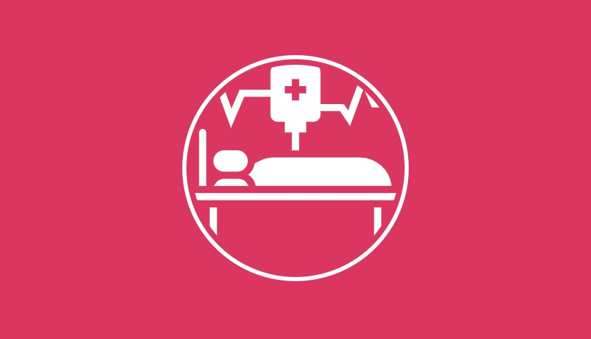

这个项目在有7k多star的时候我就看到有人推了，当时也就是看看而已，了解了这个标识的意思，并没有点进去，更没有star。再之后随着越来越多的star和关注量，公众号、社区、论坛，但凡有程序员的角落，大家都在争先传播着“996ICU”这个概念，每一次转发、star都是对996这种工作制的无声抵抗。
刚才看了一眼star已经12w+，马上就要超过react，这足以说明忍受着996的程序员是多么大的一个群体。我这里不想跟大部分人一样，痛斥996，歌颂这种行为，我想说些不一样的东西。
从自己经历出发吧，2015年刚出来工作的时候是996，当时我并没有不情愿或者觉得累，因为我很清楚自己就是个菜鸟，996可以让自己有更多的时间用来学习东西，提升技术。这种工作节奏持续了大半年，这段时间的感受也是即充实又满足的。后来公司业绩好转，改成大小周，再几个月后又改成双休。当然最开始享受双休的那几天还是很爽的，后来就慢慢习惯了，996前后我的工作状态并没有什么变化。
再后来进了现在的公司，人事告诉我大小周，那时我已经保持了将近一年的双休节奏，稍微犹豫了那么一会，但考虑到公司不错的发展前景，我还是答应进来了。从双休切换到大小周之后，我才意识到双休是多么爽的一件事。。。真的深刻体会到得到了就习以为常，失去了才懂的珍惜的感受。
在我进来不到半年的时间，公司运行的大小周调整为975，因为晚上7点公司提供晚餐，其实开发这边都是吃完饭休息一会再继续回去工作，大约也是9点走，可以说是995。
得知双休之后，我的学习状态也高涨起来了，规划着两天的自由时间可以做很多事情了，睡懒觉、打游戏、学一些自己感兴趣的东西、跑步。然而实际情况却是开始双休之后的很长一段时间里，我完成度最高的是睡懒觉、打游戏，对于学习，健身基本没怎么执行。有那么几个周末我深深地体会到舒适区只要进入，是很难挣脱出来。周末的早上醒来就感觉自己是被封印在床上了一样，除了刷手机什么都不想做，哪都不想去，早上喝水，中午叫外卖，晚上再来一份外卖，一天结束了。
同时我又是一个反省意识很强的人，在虚度了一个周末之后心里就会非常自责。一个被荒废的周末还不如忙碌一天的工作给我带来的满足感，我甚至产生了想要回到996的状态，以此来约束自律性很差的自己。
再后来也就是最近一段时间，为了达成近两个月的OKR，我“如愿以偿”地又回到了996的模式。因为早有准备，多上一天班并没有让我感觉失去多少自由。公司也考虑大家劳逸结合的情况，搭建了台球，乒乓球，Switch游戏机这种娱乐措施。周六加班，也就是做一些修修补补的任务，中午吃完饭会打一会台球，乒乓球，或者玩一会农药，回来继续工作。有时候会感觉周六加班更像是换了一个地方过周末。
但其实我也不是完全接受996的，它解决了我的时间配比问题，但也会给我引起其他不便。比如我想和女朋友周末出去就近玩一下，北京以内还好，如果想出北京就会时间安排不过来。当然还有其他的不便，要知道休息两天和休息一天可是相差一倍呢。
那回到这个话题，996这个制度是否OK呢？
如果你自律性很强，有很多想法想要实现，也有较好的时间规划，那多一些自己的私人时间是再好不过的了，996对你的确不能让你发挥更大的作用。如果你自律性很差，也没考虑过多出来的时间用来干嘛（玩和睡除外），那我建议你可以先好好想想双休之后你会做什么，双休对你来说生活品质是提高了还是降低了。当然如果你认为自己就是不想加班，只想过平淡恬静的生活，上班对你来说就是为了赚钱，这种想法也没错。因为不是每个程序员都热爱着这份工作，能从中获取到乐趣的，那就换份轻松点的工作呗。我下面讨论的内容对这类人群也是不适用的，你们可以看到这就结束了。
说些不那么中听的话，如果你自律性差，公司的996相当于帮你加了一道屏障，这个时间段它帮你隔开舒适区，迫使你投入到工作中。而我公司也有不少，没有加班任务，时不时也会主动来公司加班的人。那最理想的情况其实就是，公司相信员工，不强制加班，大家想休息了，该休息了就休息，保证把工作效率提上去。员工呢，同时为自己和公司负责，没完成工作，学习新东西，就可以来公司主动加班。
之所以说他理想，是因为很多公司不信任员工，很多员工也没有那种对自己和公司强烈的责任感。所以互联网行业出现这么多的996不是单纯公司的问题，一些程序员也负有一定的责任。
再说一些特殊情况，如果是无良公司，不考虑员工效率问题，各种强制加班，搞996，那我也是坚决反对的。
996ICU项目里有提《劳动法》，标准工时一周最高为48小时，而996是72小时，超标不少；以及超时薪资应为平日工资的150%。这让我想到了大二寒假在电子厂打工的经历，标标准准的按照劳动法来的，基本都是按时薪算的。为什么同样是受劳务合同保护，不同的行业却有着不同的处理方式呢？
我认为一个重要的原因是，电子厂流水线上的那是标准的工人，计时或者计件，可以清清楚楚的搞清楚。而程序员呢，智力劳动，没法准确的衡量一个人的工作价值。你加班两小时，是因为水平问题还是别的原因，如果是自己原因的话，公司需要付钱吗，这个说不清的。所以是否要按照劳动法付给雇员加班费，存在很多不确定因素，这个是不现实也是不合理的。
我们很多人其实心理也明白，去给996ICU点一个star并不会让自己摆脱996现状。但我们还是那样做了，这其中有一点抗争精神，但抗争之后我希望大家能够更清楚的看待996这个问题。
我更希望996这个含义可以适当拓宽一点，包含我们工作及工作以外提升自我的时间。
如果公司要求996，分出一些时间做自己的事情，保证工作学习的82配比。如果不要求996，那就尽可能合理分配时间，保证每周有72小时是投入到这个行业里来的。在这段时间里你可以用来提升自我，或者是听我给你们吹牛🙃